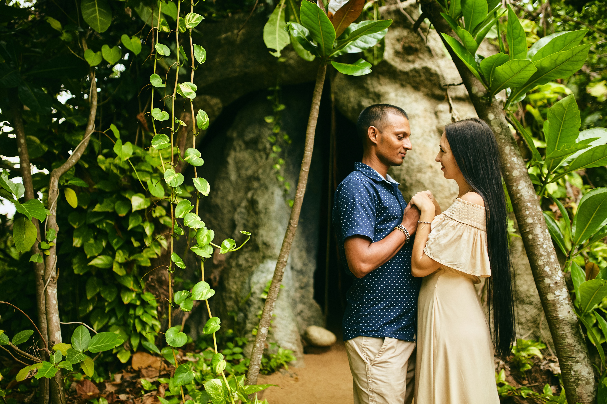
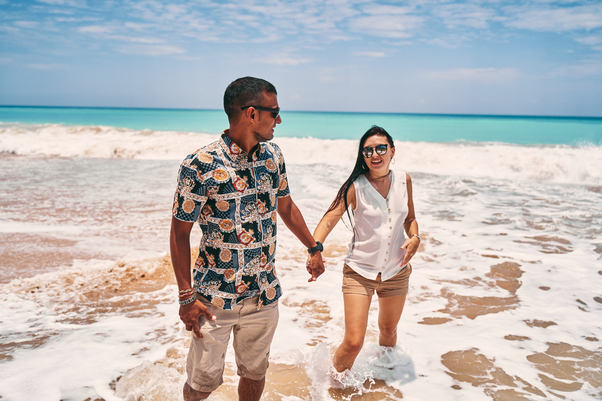
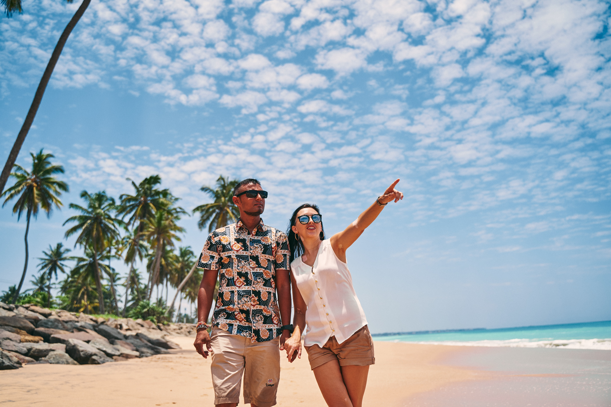

Мало кто решится доверить свой долгожданный отпуск незнакомому человеку, еще и не встречаясь с ним лично.
Поэтому давайте знакомиться!
Меня зовут Александра. Я - жена ланкийца. История нашего знакомства началась не на отдыхе, как у многих славянских девушек). Судьба нас свела в Беларуси - Нешат (мой муж) учился там в университете. 8 лет мы жили, учились и работали на моей Родине. Пройдя уже относительно не маленький путь вместе, преодолев некоторые препятствия и разделив не мало радости, наша семья (уже с двумя детишками) решила переехать на Шри-Ланку.
Чем заняться на райском острове нам долго думать не пришлось – отец Нешата посвятил туризму большую часть своей жизни и заслужил право называться одним из лучших национальных гидов Шри-Ланки. Нешату приходилось все свое детство проводить с отцом на экскурсиях, поэтому историю и все потаенные места своей Родины он знает как никто другой.
Маленькими шажками мы двигались к цели, зарабатывая репутацию и многочисленные положительные отзывы за свою работу.
И вот уже на протяжении 8-ми лет мы занимаемся непосредственной организацией туров для вас.
Все маршруты я прокладываю исходя из личного опыта путешествия по острову. Наши гиды имеют огромный опыт в своей работе, качественно и разборчиво говорят по-русски.
Индивидуальные, VIP-туры и маршрут АВТОРСКОГО ТУРА “Каникулы на Шри-Ланке” Нешат сопровождает лично!
Я на связи 24/7 и всегда готова подсказать и помочь в любой непонятной ситуации!
Спасибо, что доверяете нам!


